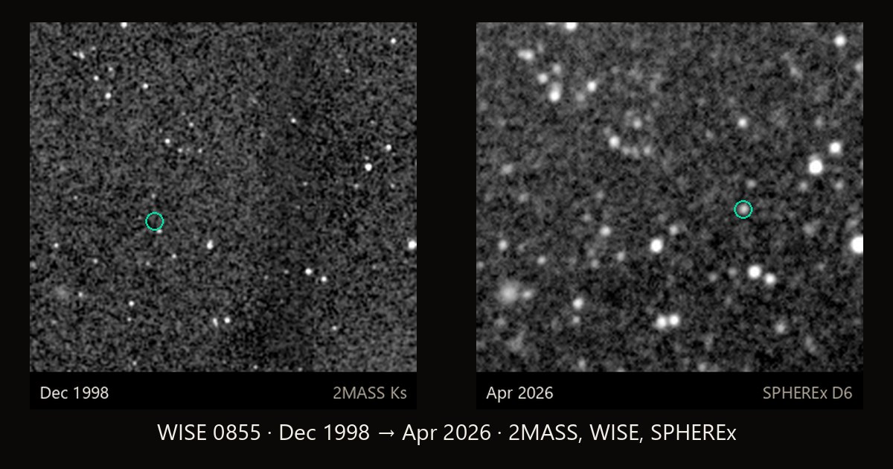

El Planeta X
El Planeta X, Plutón y SPHEREx
La búsqueda de un planeta más allá de Neptuno encontró a Plutón en 1930. Cómo se encontró, qué predicen hoy los astrónomos y si SPHEREx, de la NASA, podría verlo.
¿Por qué mirar dos veces al mismo lugar?
Porque los objetos pueden moverse o cambiar. En 1930, Clyde Tombaugh descubrió Plutón al comparar dos fotografías de la misma zona del cielo y fijarse en un punto que se había desplazado. SPHEREx observa una y otra vez cientos de millones de estrellas y galaxias, demasiadas para que un solo equipo las revise. Cuantas más personas ayuden a comparar las imágenes, más probable será que descubramos algo interesante.

El Planeta X
Tombaugh encontró Plutón mientras buscaba un «Planeta X» que se había predicho más allá de Neptuno. Hoy el nombre pertenece a otra predicción: en 2016, astrónomos de Caltech mostraron que los cuerpos pequeños más lejanos del sistema solar están alineados de un modo que la gravedad de un planeta no visto explicaría. Según la NASA, tendría de 5 a 10 veces la masa de la Tierra, orbitaría de 20 a 30 veces más lejos del Sol que Neptuno y tardaría entre 10 000 y 20 000 años en dar una vuelta. Nadie lo ha visto: sigue siendo una hipótesis.
¿Podría verlo SPHEREx?
Probablemente no. Los astrónomos miden el brillo en magnitudes: cuanto mayor es el número, más débil es el objeto. Una magnitud significa 2,5 veces más débil; cinco magnitudes, exactamente 100 veces. El punto más débil de una sola exposición de SPHEREx tiene magnitud 19, aproximadamente. Para el Planeta X se predice una magnitud de 22 a 25, es decir, de 16 a 250 veces más débil, y las búsquedas hasta la magnitud 21 no lo han encontrado. Pero todo lo que es más brillante y se mueve, SPHEREx lo registra: puede encontrarse como se encontró Plutón.
Una escalera de brillo
- −1.5 Sirio, la estrella más brillante
- 6 estrella más débil visible a simple vista
- 9.5 Estrella de Barnard
- 15 Plutón
- 19 punto más débil de una exposición de SPHEREx
- SPHEREx llega hasta aquí
- 22–25 Planeta X, según la predicción
Una magnitud es 2,5 veces más débil; cinco, 100 veces.
Cómo se encuentran hoy los mundos fríos
Un mundo más allá de Neptuno, o una enana marrón fría cerca del Sol, se delata como Plutón: se mueve. Hoy la búsqueda se hace en imágenes infrarrojas tomadas con años de diferencia. WISE 0855, la enana marrón más fría que se conoce, se encontró en 2014 por su movimiento en las imágenes de WISE; en la imagen que 2MASS tomó de su lugar en 1998 no se ve nada, porque es demasiado fría para brillar a 2,2 micras. La vista Años de Chronosphere la vuelve a encontrar sin que nadie le diga dónde mirar: 8,10 segundos de arco al año, en las 23 visitas de WISE y NEOWISE (el catálogo da 8,15). Luhman 16, la pareja de enanas marrones más cercana, hallada en 2013 del mismo modo, también vuelve a aparecer.

Abrir WISE 0855 a lo largo de 27 años
¿Qué hace Chronosphere?
Elige cualquier punto del cielo. Chronosphere encuentra todas las exposiciones de SPHEREx de ese lugar en el archivo abierto de la NASA, alinea las imágenes y las reproduce como un vídeo corto. También identifica el objeto y construye su espectro. Probémoslo con cinco objetos de prueba.
Fuentes: NASA: Hypothetical Planet X · NASA: Plutón · Observatorio Lowell: las placas del descubrimiento de Plutón · Batygin & Brown 2016 · Brown & Batygin 2016 · Brown, Holman & Batygin 2024 · Luhman 2014: WISE 0855 · Luhman 2013: Luhman 16 · Crill et al. 2025, el simulador del cielo de SPHEREx · JPL Horizons: dónde estaba Plutón